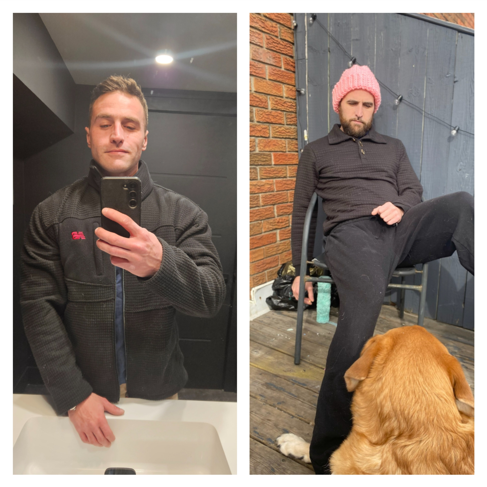
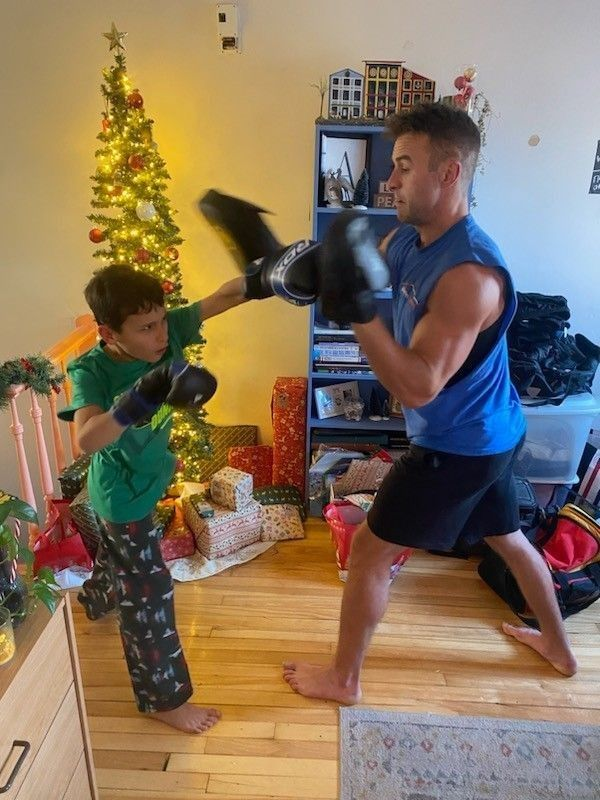
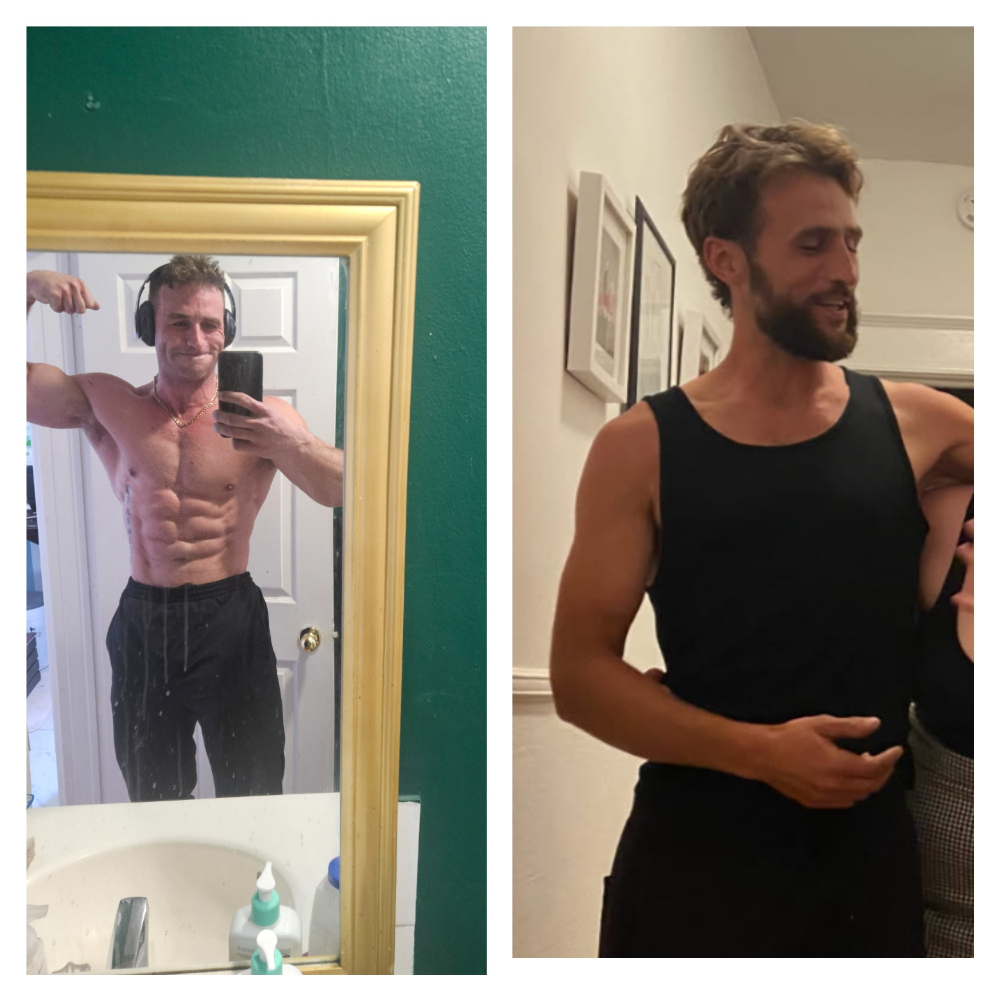
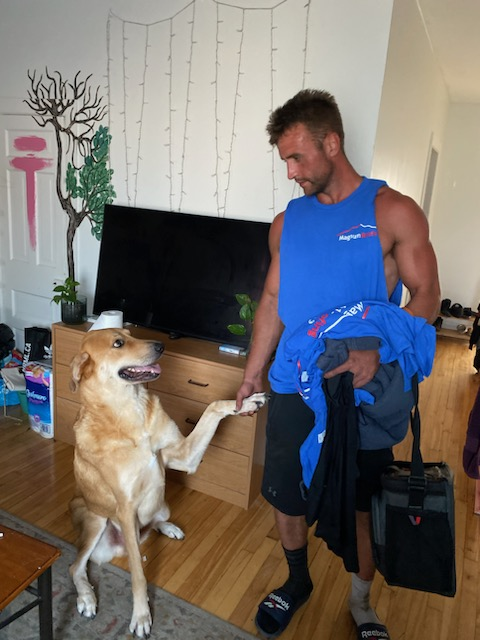

My Recovery Journey
I walked out of custody in my mid-thirties with no ID, no bank account, and a decade of active addiction behind me. I had burned every bridge and was carrying the heavy weight of prison identity and old street beliefs.
Today, four years later, I’m a full-time roofer in Ottawa earning a trade wage and building a life that actually holds. I learned how to shed that old identity, drop the beliefs that kept me stuck, and navigate real Ottawa systems — methadone and Suboxone, shelters, OHIP-funded rehab, pre and post treatment transitions, and re-entering the workforce.
That journey taught me what actually works on the ground.

Left: Early days after custody.
Right: 4 years clean with my boy by my side.

Me and my boy — Christmas 2024. This is what recovery looks like.
What I Can Offer
I help people navigating addiction recovery — and the families trying to support them.
Ottawa System Navigation
- Navigating shelter systems and stabilization programs
- Accessing detox and withdrawal management beds
- Getting into rehab through OHIP
- Starting Methadone or Suboxone treatment
- Finding ID, healthcare, and basic services after custody
- Returning to construction or trades work
Motivation Window
The Motivation Window is the short period when someone is actually ready and open to change. Missing it can mean months or years before the next opportunity.
I help people recognize when that window opens and take meaningful steps while it’s still open.
Shedding Prison Identity
- Recognizing institutional thinking patterns
- Adjusting to freedom and personal responsibility
- Dealing with stigma and assumptions
- Rebuilding discipline and daily routine
- Separating your future from old peer groups
Family Support
- Understanding addiction cycles without enabling
- Navigating detox and rehab waitlists
- Supporting someone while protecting your own wellbeing
- Dealing with fear, burnout, and uncertainty

4 years clean and back in the best shape of my life.

Me today — full-time roofer, 4 years clean, and still got my best friend with me.
I’m not a therapist. I’m a guy who’s been through it, stayed clean, and now works full-time as a roofer in Ottawa.